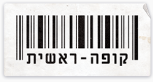
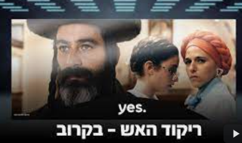
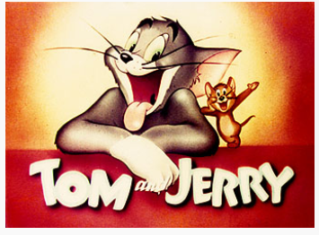

| שם הסרט | פוסטר | תאור |
|---|---|---|
| קופה ראשית |  | קופה ראשית היא קומדיית מצבים סאטירית ישראלית מסוגת מוקומנטריה |
| ריקוד האש |  | ריקוד האש היא סדרת טלוויזיה ישראלית מסוגה דרמה שכתבה רמה בורשטין. הופקה בסיוע קרן גשר לקולנוע רב תרבותי ועלתה לשידור ב-24 באפריל 2022 ביס. שנת ההפקה של הסדרה היא שנת 2022. |
| תום וג'רי |  | הסרטונים עצמם מספרים על טום החתול שמנסה לרדוף ולתפוס את ג'רי העכבר בלי הצלחה, ונקלע לצרות |
| סמי הכבאי | הסדרה עוסקת בקורותיו של כבאי בשם סמי (במקור סם), ובמשימות והפעילויות אשר סמי מבצע. הסדרה מכילה רעיונות בתחום הבטיחות ומניעת שרפות המונגשים לקהל הצעיר. | |
| הגן של דודו | בגן של דודו היא סדרת סרטים מוזיקליים ישראלית לילדים בכיכובו של דודו פישר, ששווקה בקלטות וידאו ותקליטורי וידאו. השירים מכל סרט יצאו גם על גבי תקליטורי שמע וקלטות שמע. הסדרה עוסקת בערכים שונים, ובערכי היהדות כגון תפילה, שבת וחגי ישראל. בסדרה מופיעים ילדים מגני ילדים שונים בישראל ומגילאים שונים, ולהקת ילדים השרה יחד עם פישר. |